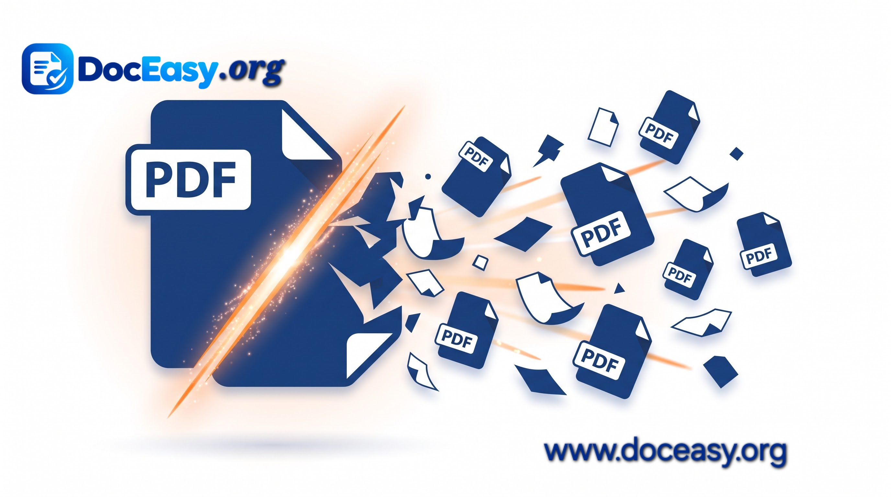

Split PDF Files Online
Extract specific pages or separate large PDF documents into individual files instantly — 100% in your browser, completely private, zero uploads.
Select or Drop a PDF File
Upload a PDF document to extract pages
Complete Engineering Guide: How to Split Large PDF Documents Online Free (2026)
The Portable Document Format (PDF) remains the indisputable global standard for immutable document exchange across business, judicial systems, academia, and civil administration. Developed to preserve typographic integrity and layout fidelity across divergent operating environments, a PDF binds text streams, structural outlines, TrueType/OpenType font files, vector shapes, and raster images into a single cohesive binary file. However, as multi-hundred-page files, compiled legal case bundles, annual financial reports, and scanned administrative records circulate daily, users frequently face the challenge of extracting isolated excerpts.
Whether you need to extract an individual invoice from an exhaustive quarterly tax ledger, detach a single notarized annexure from a 400-page property deed, or isolate a solitary chapter from an academic volume, sending whole gigabyte-sized files via email or uploading them to restrictive employment portals is impractical. The DocEasy Split PDF Tool delivers an instantaneous, zero-latency, private client-side utility engineered to deconstruct any PDF into standalone single-page files or custom page ranges without transferring sensitive documents to remote third-party cloud infrastructure.

📷 [Demo Image: assets/images/pdf-split-demo.jpg]Step-by-Step Tutorial: How to Split PDF Documents Online
- Load Source PDF: Drag and drop your file directly into the interactive dashed staging zone or tap to choose it from your local storage drive.
- Confirm Document Details: The tool decodes the document container instantly in memory, presenting the document title and verified byte size on the interface.
- Select Split Methodology: Choose between two dedicated operational modes:
- Extract All Pages as Separate PDFs: Generates an isolated one-page PDF file for every individual page in the document.
- Extract Page Range: Enter custom page configurations using straightforward comma and hyphen notation (e.g.,
1-4, 7, 10-15) to compile designated sheets into a brand-new PDF.
- Trigger Memory Extraction: Click the green "Split PDF Now" button. The browser's native JavaScript runtime clones dictionary nodes, parses cross-reference tables, and packages binary payloads.
- Download Output Documents: Retrieve your extracted single-page documents individually or save your compiled range output directly to your storage drive.
1. The Internal Architecture of a PDF: How Page Separation Works
To appreciate how DocEasy partitions complex documents without loss of quality, it is essential to understand the internal structure of a PDF. Unlike flat image containers (like PNG or JPEG) or structured markup files (like HTML), a PDF file is an object-oriented binary database composed of four structural tiers:
- The Header: Declares the governing format specification (e.g.,
%PDF-1.7) to the parser. - The Body: A collection of numbered indirect objects containing text streams, raster image XObjects, font dictionaries, and color space palettes.
- The Cross-Reference (XRef) Table: A systematic index of exact byte offsets locating every indirect object inside the physical file.
- The Trailer: Directs the rendering agent to the root catalog dictionary, which hierarchically maps the document's page tree.
When substandard online converters attempt to "split" a document, they frequently convert pages into raster JPEG images and re-wrap those images into a new PDF canvas. This destructive shortcut balloons file sizes, destroys embedded typography, ruins vector sharpness, and eliminates selectable text. DocEasy employs pdf-lib to carry out binary object extraction: the engine traverses the source page tree, isolates referenced indirect content streams, rebuilds the internal XRef table, and writes out a clean PDF document while preserving original typography and vector assets.
2. Operational Comparison: Full Extraction vs. Custom Range Filtering
| Functional Mode | Input Syntax Example | Output Structure | Primary Real-World Scenario |
|---|---|---|---|
| All Pages Mode | N/A (Automated Batch) | Individual single-page files (Page_1.pdf, Page_2.pdf...) | Distributing single invoices to multiple clients, digital filing of payslips, isolating scanned forms. |
| Single Page Extraction | 5 |
One single-page PDF containing exclusively Page 5 | Submitting an isolated academic marksheet, birth certificate, or signature page from a dossier. |
| Continuous Range Extraction | 12-25 |
One consolidated PDF containing pages 12 through 25 | Carving out an individual chapter from an eBook, curriculum syllabus, or specific project phase. |
| Discontinuous Complex Range | 1-3, 7, 12-15 |
One consolidated PDF containing pages 1, 2, 3, 7, 12, 13, 14, 15 | Extracting non-sequential exhibits for judicial filings, tax schedules, or selected technical diagrams. |
3. Detailed Syntax Rules for Page Range Extraction
Our integrated range parser was built to handle varied real-world user entries without throwing unexpected application crashes:
- Hyphenated Span Formatting: Typing
4-9isolates pages 4, 5, 6, 7, 8, and 9 sequentially. - Comma-Delimited Discontinuous Values: Typing
2, 6, 11isolates those specific pages while excluding intermediaries. - Reversed Range Tolerance: If a user enters
10-5, the parser automatically swaps boundaries to evaluate the sequence as5-10. - Redundant Index Deduplication: If an entry inadvertently reads
1, 2, 2, 3, 1-3, the parser normalizes inputs using internal unique sets, preventing duplicated pages in the output document. - Out-of-Bounds Protection: If a range requests page
150on a document containing only 40 pages, out-of-range numbers are safely omitted while valid pages remain intact.
4. Industry Use Cases Across Professional Sectors
Isolating and reorganizing document pages is a frequent necessity across numerous modern professional environments:
- Judicial Filings & Legal Practice: Legal case submissions routinely compile hundreds of pages of filings, affidavits, witness records, and evidentiary exhibits into single archival dossiers. Court registry portals strictly regulate maximum submission payload sizes. Litigators use Split PDF to partition large bundles into compliant, numbered exhibits without compromising embedded metadata.
- Chartered Accountancy & Corporate Finance: Annual tax ledgers, audit compilations, and GST reports often contain hundreds of ledger sheets. Accountants isolate specific schedules, client-specific tax summaries, and quarterly profit statements for distribution without disclosing extraneous internal ledgers.
- eMitra, CSC & Cyber Cafe Operations (India 2026): Public service kiosk operators across India routinely handle multi-page application packets for citizen welfare schemes, caste validations, state scholarships, and land registries (Bhulekh/Jamabandi). Portals frequently cap upload sizes at 200 KB to 500 KB per page. Splitting compiled government PDFs into individual pages enables smooth compliance with portal guidelines.
- Academic Institutions & Students: Educators create concise study packets by extracting individual textbook chapters or problem sets rather than circulating cumbersome complete editions. Students extract project rubrics, lecture notes, or research papers for study efficiency.
- Human Resources & Corporate Payroll: Payroll platforms frequently generate combined master monthly salary statements. HR personnel extract individual employee pay stubs for private delivery, safeguarding salary confidentiality across teams.
5. Client-Side Processing: The Critical Defense for Sensitive Documents
When selecting an online document processing utility, underlying system architecture is of paramount importance. Most traditional PDF splitting websites operate on a legacy cloud-processing pipeline: your document is uploaded across public internet infrastructure to a remote application server running backend utilities like Ghostscript or Poppler. This workflow introduces severe data privacy hazards:
- Data Interception Risks: Transmitting unencrypted corporate balance sheets, legal documents, and personal identity records exposes files to man-in-the-middle interception risks.
- Unregulated Cloud Data Storage: Once uploaded to third-party cloud infrastructure, files may persist across temporary server storage, cold backups, or debugging logs without clear expiration timelines.
- AI Dataset Ingestion: Some consumer utilities grant themselves broad data usage rights in their terms of service, allowing uploaded text to be analyzed or ingested into machine learning datasets.
The DocEasy Architecture: DocEasy operates on an entirely decentralized client-side model. When a PDF is loaded, it is held strictly in your browser's private memory space. Using WebAssembly and vanilla JavaScript, pdf-lib parses the document's binary stream directly on your computer's local processor. Zero bytes of your document are ever transmitted over the network.
You can verify this yourself: open DocEasy Split PDF, disconnect your Wi-Fi or turn on Airplane Mode, and process your files. The application will partition, generate, and download your split PDFs seamlessly without an active internet connection.
6. Frequently Asked Questions (FAQ)
Q1: Is DocEasy Split PDF completely free to use?
Yes. The tool is 100% free with no hidden paywalls, daily usage caps, subscription barriers, or watermark overlays on output files.
Q2: Are my sensitive PDF documents uploaded to external servers?
No. DocEasy executes all binary PDF modifications locally in your browser session via client-side JavaScript. No file data is ever transmitted across the network.
Q3: Will text clarity, vector graphics, or image quality be reduced?
No. DocEasy copies the underlying PDF page dictionaries, embedded vector shapes, and image streams directly into the new document container without rasterizing pages. Text remains crisp, selectable, and searchable.
Q4: Can I split password-protected PDF files?
The tool processes standard unencrypted documents. If your document requires a password to open, use our dedicated PDF Locker & Unlocker to remove access restrictions before splitting.
Q5: What happens if I type an invalid page number into the range box?
Our range parser ignores non-numeric characters and skips page indices that exceed the document's total page count. Valid page entries within range will process normally.
Q6: What is the maximum file size or page limit supported?
There are no arbitrary software limits. Because processing occurs inside your browser, the only constraint is your device's available working memory (RAM). Modern computers and phones easily handle files of 100 MB to 200 MB.
Q7: Can I use this PDF splitter offline without an active internet connection?
Yes. Once the page is loaded into your browser, the complete JavaScript engine is cached. You can work completely offline or in airplane mode without interruption.
Q8: Can I split PDFs on mobile devices like Android or iPhone?
Yes. DocEasy is built as a responsive Progressive Web App (PWA) compatible with mobile Chrome, Safari, Firefox, and Edge across both Android and iOS devices.
Q9: Why are some extracted single-page PDFs slightly larger than expected?
PDF documents often bundle global font files, metadata schemas, and structural definitions into shared document dictionaries. When a page is extracted, it must include these embedded fonts to render correctly. To reduce the final file size, run output files through our PDF Compressor.
Q10: Are hyperlinks and interactive form fields preserved after splitting?
Standard annotations, internal page jumps, and structural links are maintained whenever their target objects reside within the extracted page scope. Complex digital cryptographic signatures may be invalidated when structural page counts change.
Q11: How do I recombine or reorder pages after splitting?
You can arrange and join pages into any sequence using our PDF Merge Utility.
Q12: Can I split scanned image-based PDFs?
Yes. Scanned PDFs are structured like standard PDFs with full-page image objects. The splitter will extract those pages cleanly. To extract raw editable text from scanned pages, use our Document Scanner & OCR.
7. Recommended Multi-Tool Workflow
PDF splitting is often part of a wider document management workflow. Combine DocEasy utilities to handle complex document tasks:
- Step 1 — Decrypt Locked Files: If processing password-protected identity documents or statements, unlock them using our PDF Locker & Unlocker.
- Step 2 — Partition Required Content: Use the Split PDF tool to isolate specific chapters, schedules, or evidentiary exhibits.
- Step 3 — Recombine & Reorder: Assemble disparate pages into a cohesive presentation using our PDF Merge tool or Universal File Merger.
- Step 4 — Optimize Output Size: Finish by reducing file size for email distribution or portal uploads using our PDF Compressor.
8. Summary
Partitioning and organizing multi-page PDF documents no longer requires costly desktop software licenses or compromising data confidentiality with cloud-upload services. The DocEasy Split PDF tool delivers an instantaneous, private, and precise document extraction suite directly inside your web browser. Bookmark this page for fast, secure document splitting on any device.